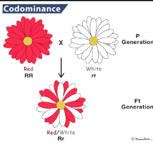
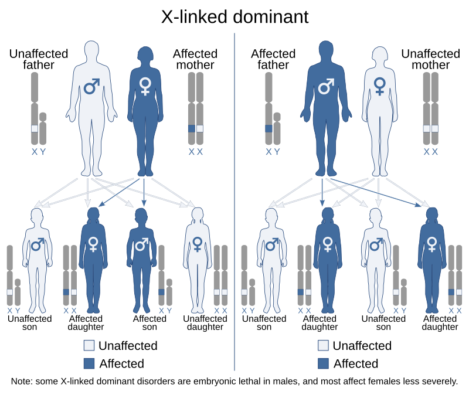

Inheritance Patterns
These examples are oversimplified, and as always, genetics is much more complex.
Dominant-Recessive
Dominant-Recessive genes are what you generally learn in school. There is a dominant allele, and a recessive allele. If there is a dominant allele present, then you get the dominant, but if there is only recessive alleles present, then you get the recessive trait. This shows in eye colors of humans.
Incomplete
Incomplete dominance is when neither allele is fully dominant. It causes a blended/intermediate phenotype. An example of these are the color of petals on flowers.
Co-Dominance
Co-Dominance occurs when both genes are dominant, and both traits show up. An example of this is cow fur.
X-Linked (Recessive)
X-Linked Recessive traits are traits that are passed down through mutations in the X chromosome. Due to it being recessive, requiring all X chromosomes to have that mutation, more males are affected than females, due to males only having one X chromosome. Females can be carriers of this trait though, as the the X chromosome from females does pass down to future generations.
X-Linked (Dominant) (Not Simulated)
X-Linked Dominant traits are traits that are passed down through mutations in the X chromesome. Due to it being dominant, it only requires one X chromesome to be mutated to exist. This means more females are affected than males.
Simulation
Below is an interactive simulator to explore genetic inheritance:
Each trait that the bean has simulates a different inheritance pattern. By clicking New Generation, you create a random (or custom) partner for the bean, and then a offspring is made from those two beans.
Hands: Dominant-Recessive
Legs: Incomplete Dominance
Color: Co-Dominance
Gender & X Linked: Head Color (Yellow is Male, Black is Female, and Green is X linked mutation)
View on Github